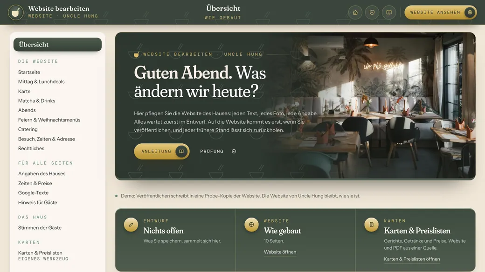
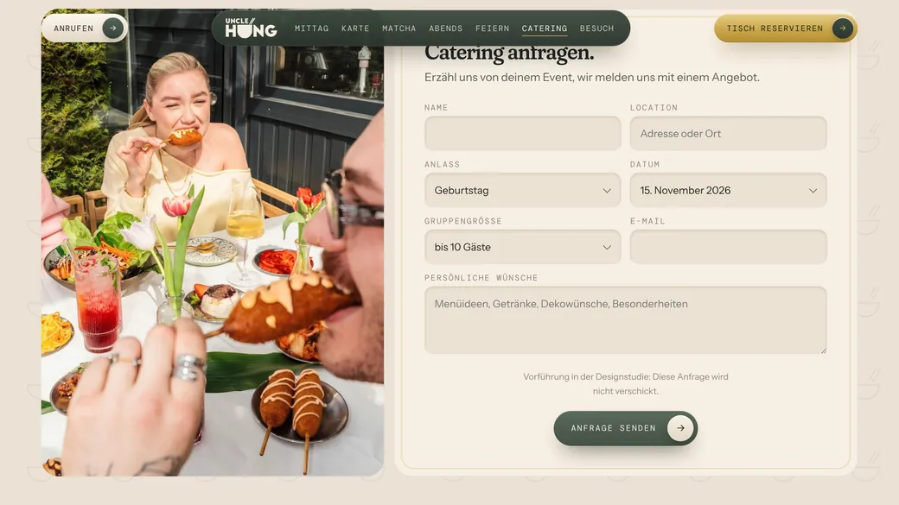
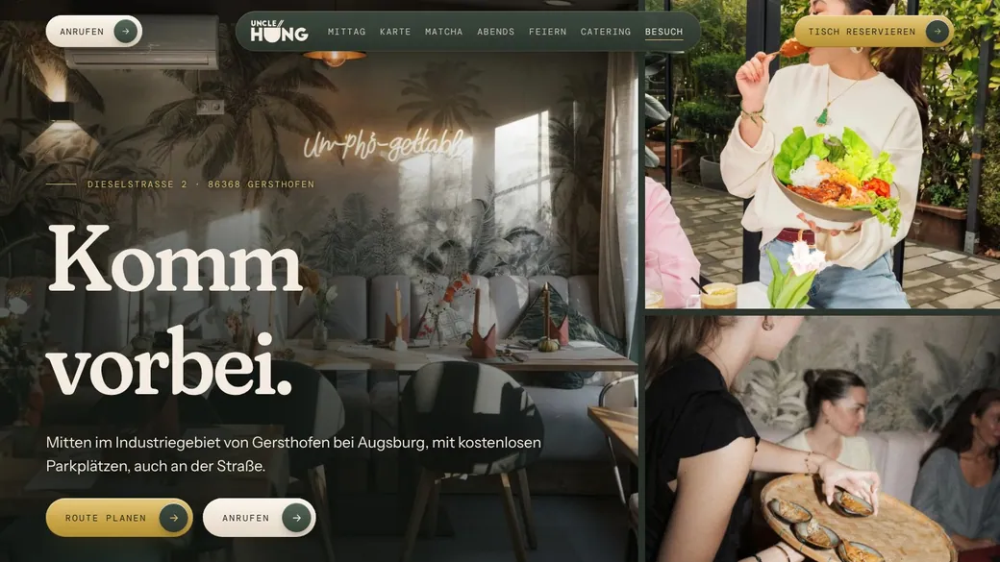

Der Prüfbericht
Was allesgeprüft wurde.
Hier steht in einfachen Worten, was an Website, Karte und Werkzeugen angesehen und ausprobiert wurde, und was danach noch bei Ihnen liegt.
01Die Website
Die Website
Zehn Seiten: acht für Ihre Gäste von der Startseite bis zum Besuch, dazu Impressum und Datenschutz.
- Jede Seite in Safari und in Chrome geöffnet, auf dem Handy und auf dem Rechner. Nichts verrutscht zur Seite, kein Bild fehlt, kein Skript bricht ab.
- Mit vierfach gebremstem Rechner gescrollt, wie auf einem älteren Gerät. Die Seiten laufen ruhig, beim Laden springt nichts.
- Zeiten, Adresse, Karte und Weihnachtsmenüs stehen an genau einer Stelle, und jede Seite liest von dort.
02Die Karte
Die Karte
Lunchdeals, alle Rubriken mit Allergenen, Favoriten, Sweets und Signature Drinks, dazu Uncle’s Christmas.
- Gelesen aus Ihrer Karte auf der Canva-Seite, nicht abgeschrieben. Jeder Preis und jede Angabe zu den Allergenen ist gegen das Original geprüft.
- Neu gesetzt im Kleid der neuen Seite, die Schriften fest eingebettet.
03Die sieben Werkzeuge
Die sieben Werkzeuge

Die Werkzeuge, mit denen die Familie die Seite selbst führt.
- Jedes Werkzeug in seinem eigenen Durchgang gebaut und Schritt für Schritt bedient, mit erfundenen Gästen und Zahlen.
- Am 11. November jedes Werkzeug aus dieser Übersicht geöffnet und Knopf für Knopf bedient, ebenso die Übersicht selbst mit Drucksachen, Tischaufstellern und Mails.
- Kein Werkzeug schickt etwas von sich aus und keines öffnet ein Mailprogramm. Antworten an Gäste bleiben als Entwurf im Werkzeug, bis jemand sie selbst verschickt.
04Ihre Daten und die Ihrer Gäste
Ihre Daten und die Ihrer Gäste

Was gespeichert wird und was nicht.
- Gäste bekommen keine Cookies. Im Entwurf werden keine Besuche gezählt; «Besucher» zeigt erfundene Zahlen.
- Tisch, Feier und Catering kommen über ein Fenster auf der Seite; im Entwurf erreicht nichts davon die echte Familie.
- Suchmaschinen sehen den Entwurf nicht, bis Sie ihn freigeben.
05Die Suche
Die Suche

Wie Gäste das Haus finden, wenn sie bei Google suchen oder eine KI fragen. Was heute schon steht und was beim Freigeben dazukommt.
- Solange die Seite ein Entwurf ist, bleibt sie für Suchmaschinen absichtlich unsichtbar. Freigegeben wird sie erst, wenn sie unter Ihrer eigenen Adresse läuft.
- Jede der 11 Seiten hat einen eigenen Titel und einen kurzen Text für das Suchergebnis.
- Adresse, Telefon, Reservation, Karte und Öffnungszeiten werden beim Freigeben zusätzlich so hinterlegt, dass Google und KI-Assistenten wie ChatGPT sie direkt lesen können, ohne zu raten.
- Jedes Bild hat eine Beschreibung. Das hilft Gästen, die sich die Seite vorlesen lassen, und der Bildersuche.
- Alles Wichtige steht als Text auf der Seite und nicht in Bildern. So kann eine KI, die Gästen bei der Suche hilft, Ihre Karte, Anlässe und Angebote auch wirklich lesen.
- Ersetzt die neue Seite Ihre heutige, führt jede bisherige Adresse auf die passende neue Seite. So geht kein Platz in den Suchergebnissen verloren, und kein geteilter Link läuft ins Leere.
- Was außerhalb der Website zählt, gehört genauso dazu: der Eintrag bei Google Maps, Ihre Bewertungen und gleiche Angaben auf Tripadvisor, den Restaurantführern und Portalen. Auf diese Quellen stützen sich auch KI-Assistenten stark. Das lässt sich in der laufenden Betreuung mitpflegen.
06Was offen bleibt
Was offen bleibt
Das kann nur Ihre Familie entscheiden.
- Welche Fotos auf die neue Seite kommen, entscheiden Sie. Ein Vorschlag aus Ihrer heutigen Seite und Ihrem Instagram liegt bei.
- Im Entwurf öffnen sich die Werkzeuge ohne Anmeldung. Bei der Auslieferung werden alle Werkzeuge mit Anmeldung und Passwort geschützt.
- Die Herbstkarte und die Saisonkarten stehen noch nicht auf der Seite, weil es von ihnen kein Bild mit Preisen gibt.
Jede Zeile hier hat eine Prüfung hinter sich, die sich wiederholen lässt. Wenn Sie zu einem Punkt mehr wissen möchten, fragen Sie mich einfach.
Zurück zu «Alles auf einen Blick»